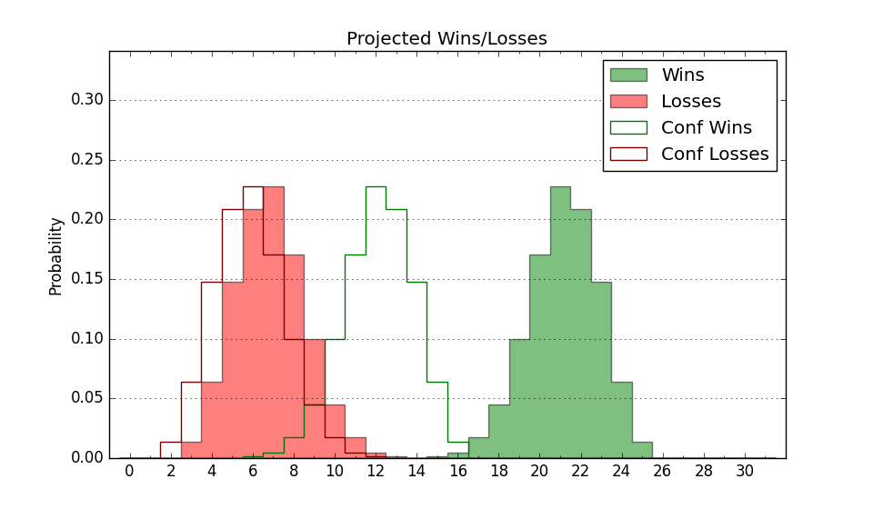

| Home | Game Probabilities | Conferences | Preseason Predictions | Odds Charts | NCAA Tournament |
| City: | Lynchburg, Virginia | |
| Conference: | Conference USA (4th)
| |
| Record: | 2-2 (Conf) 11-3 (Overall) | |
| Ratings: | Comp.: 11.1 (79th) Net: 12.9 (72nd) Off: 109.4 (113th) Def: 96.5 (51st) SoR: 17.9 (66th) |
| Remaining | ||||||
|---|---|---|---|---|---|---|
| Date | Opponent | Win Prob | Pred. | |||
| 1/16 | UTEP (164) | 84.9% | W 72-61 | |||
| 1/18 | New Mexico St. (136) | 81.7% | W 71-61 | |||
| 1/25 | @ FIU (223) | 74.1% | W 71-63 | |||
| 1/30 | @ Kennesaw St. (196) | 70.1% | W 75-69 | |||
| 2/1 | @ Jacksonville St. (152) | 59.7% | W 70-67 | |||
| 2/6 | Louisiana Tech (114) | 78.1% | W 71-62 | |||
| 2/8 | Sam Houston St. (160) | 84.7% | W 80-68 | |||
| 2/13 | @ New Mexico St. (136) | 56.7% | W 67-65 | |||
| 2/15 | @ UTEP (164) | 62.2% | W 68-65 | |||
| 2/22 | FIU (223) | 90.7% | W 75-59 | |||
| 2/27 | Jacksonville St. (152) | 83.5% | W 74-63 | |||
| 3/2 | Kennesaw St. (196) | 88.9% | W 79-65 | |||
| 3/6 | @ Middle Tennessee (107) | 49.4% | L 69-70 | |||
| 3/8 | @ Western Kentucky (140) | 57.3% | W 72-69 | |||
| Previous | Game Score | |||||
| Date | Opponent | Win Prob | Result | Off | Def | Net |
| 11/4 | (N) Valparaiso (199) | 81.3% | W 83-63 | 14.4 | 9.8 | 24.2 |
| 11/9 | @Seattle (156) | 61.1% | W 66-64 | -6.0 | 0.1 | -5.9 |
| 11/16 | (N) Florida Atlantic (104) | 62.0% | L 74-77 | -5.7 | 0.9 | -4.8 |
| 11/17 | @College of Charleston (159) | 61.3% | W 68-47 | -1.9 | 29.8 | 27.9 |
| 11/22 | (N) Louisiana Lafayette (338) | 94.4% | W 89-69 | 18.5 | -15.0 | 3.5 |
| 11/24 | (N) Kansas St. (101) | 61.2% | W 67-65 | 0.6 | 1.3 | 1.9 |
| 11/25 | (N) McNeese St. (64) | 41.7% | W 62-58 | 1.2 | 8.4 | 9.7 |
| 12/7 | Mississippi Valley St. (364) | 99.7% | W 89-52 | 7.3 | -10.4 | -3.1 |
| 12/14 | North Carolina A&T (310) | 95.7% | W 83-74 | -2.2 | -12.6 | -14.9 |
| 12/21 | UT Arlington (195) | 88.4% | W 79-56 | -0.2 | 14.0 | 13.8 |
| 1/2 | Western Kentucky (140) | 82.1% | L 70-71 | -8.1 | -6.9 | -15.0 |
| 1/4 | Middle Tennessee (107) | 76.9% | W 73-63 | -2.8 | 1.6 | -1.1 |
| 1/9 | @Sam Houston St. (160) | 61.9% | W 76-68 | -3.9 | 10.3 | 6.5 |
| 1/11 | @Louisiana Tech (114) | 51.2% | L 74-79 | 0.7 | -10.3 | -9.6 |
| Stats & Trends | |||||
|---|---|---|---|---|---|
| Current | Day | Week | Month | Season | |
| Composite | 11.1 | -0.1 | -0.5 | +0.5 | +10.0 |
| Comp Rank | 79 | -2 | -2 | +4 | +56 |
| Net Efficiency | 12.9 | -0.1 | -1.3 | -1.9 | -- |
| Net Rank | 72 | -- | -6 | -5 | -- |
| Off Efficiency | 109.4 | +0.0 | +0.2 | +0.0 | -- |
| Off Rank | 113 | -1 | +4 | -8 | -- |
| Def Efficiency | 96.5 | -0.2 | -1.6 | -1.9 | -- |
| Def Rank | 51 | -3 | -10 | -8 | -- |
| SoS Rank | 203 | -1 | +42 | +31 | -- |
| Exp. Wins | 21.1 | +0.0 | -0.4 | -0.5 | +4.2 |
| Exp. Conf Wins | 12.1 | +0.0 | -0.4 | -0.7 | +1.6 |
| Conf Champ Prob | 51.5 | +0.2 | -8.2 | -1.6 | +33.1 |

| Advanced Stats | ||
|---|---|---|
| Stat | Value | Rank |
| Off Eff FG % | 0.569 | 31 |
| Off Ast Ratio | 0.173 | 42 |
| Off ORB% | 0.206 | 344 |
| Off TO Rate | 0.140 | 110 |
| Off FT Ratio | 0.293 | 275 |
| Def Eff FG % | 0.469 | 64 |
| Def Ast Ratio | 0.108 | 12 |
| Def ORB% | 0.268 | 116 |
| Def TO Rate | 0.158 | 125 |
| Def FT Ratio | 0.264 | 45 |